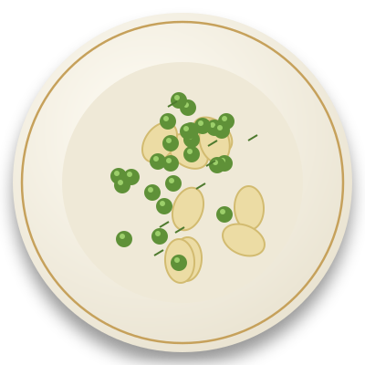
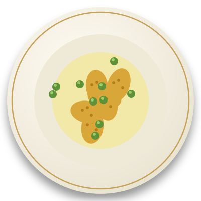
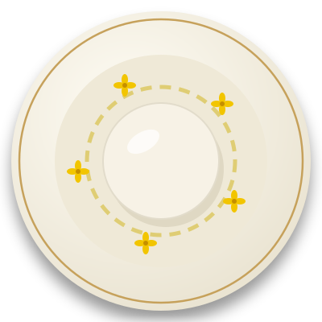

Velouté de betterave
Betterave rôtie mixée, filet d’huile de colza et éclats de blé croustillants.
Betterave rôtie mixée, filet d’huile de colza et éclats de blé croustillants.

Petits pois croquants, pommes de terre tièdes et vinaigrette à l’huile de colza.

Plat signature
Blé tendre mijoté comme un risotto, huile de colza, dés de betterave, petits pois et fleurs de colza. Découvrir le plat ou voir la recette imaginée.

Pommes de terre dorées au four, crème légère et pois frais.

Un biscuit sablé à la farine de blé et une crème douce à la betterave.

Une texture soyeuse et une note légèrement noisettée.
Cette carte imaginaire décline le blé, le colza, la betterave et les petits pois dans une cuisine végétale de saison.
Maison Sillon est un restaurant imaginaire. Aucune table ne peut être réservée et aucune donnée n’est collectée sur ce site.
Ce bouton illustre seulement la mise en page d’un site de restaurant.
Fermer